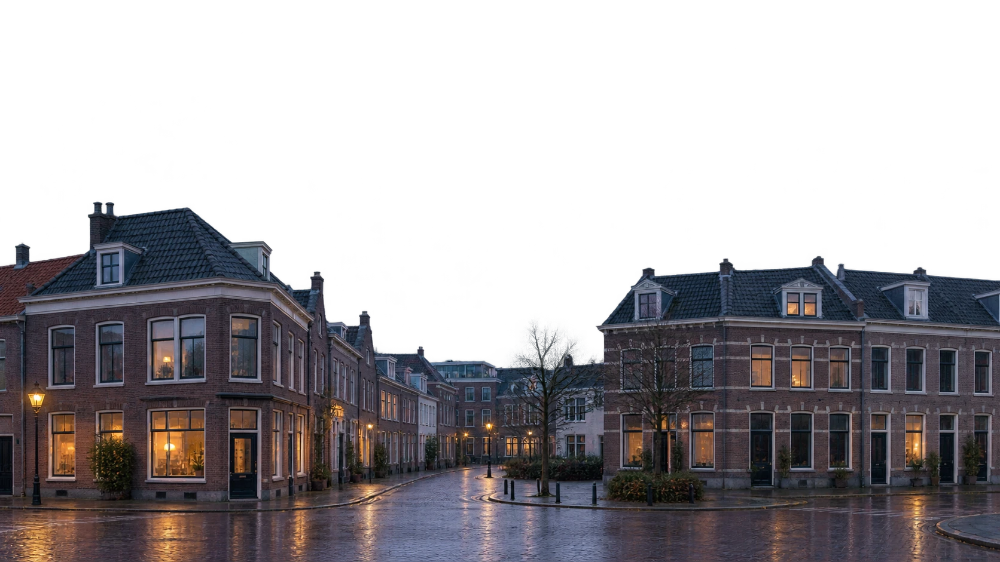
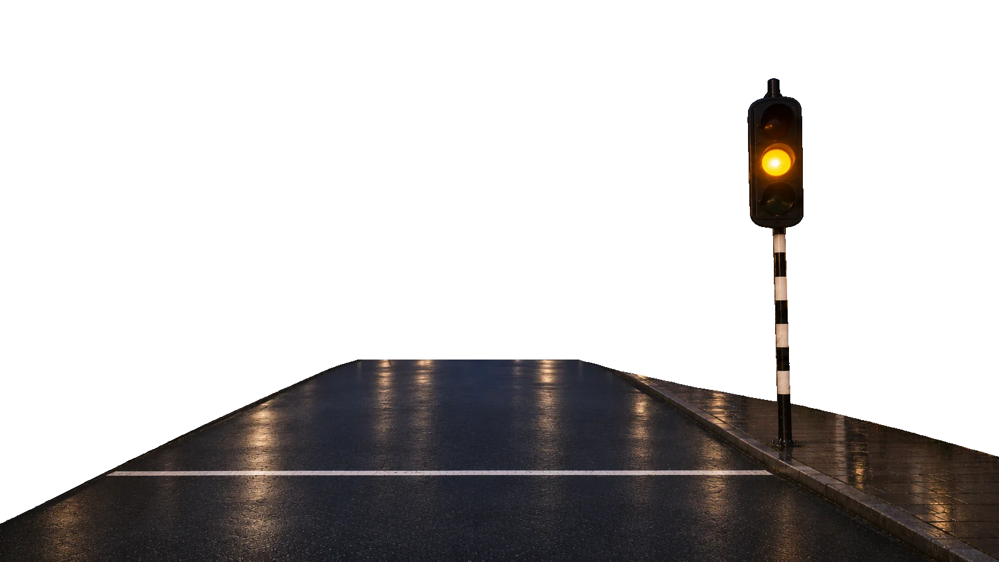
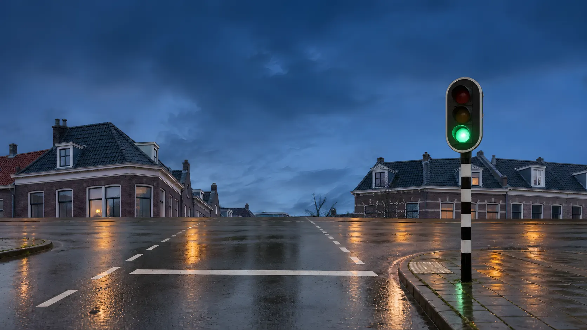

Geel.
En nu?
Een antwoord kiezen is één ding.
Weten waarom is alles.
JE THEORIE-EXAMEN BEGINT HIER.


Het licht wordt geel.
Jij weet wat je doet.

Theorie B voor iPhone
Oefenen. Begrijpen. Door.
Oefen voor je theorie-examen auto. Je hebt 44 van de 50 vragen goed nodig.
Start gratis proefexamen50 vragen · 30 minuten · 44 goed nodig
Theorie B heeft eigen oefenvragen en geen band met het CBR. Je score zegt niets over je CBR-uitslag en geeft geen garantie dat je slaagt.
Over deze appOEFENEN. MET UITLEG.
Een antwoord kiezen is één ding.
Weten waarom is alles.
Even twijfelen.
Dan valt het op zijn plek.
Vraag voor vraag.
Tot je het ziet.
Een kijkje in de app · scroll om te oefenen
Geel betekent stoppen. Alleen als veilig stoppen redelijkerwijs niet meer kan, mag je doorrijden.
RVV 1990, art. 68 lid 1 onder bFout meldenAls je afslaat, laat je verkeer naast je op dezelfde weg voorgaan.
RVV 1990, art. 18 lid 1Fout meldenBij fileverkeer mag je een file rechts inhalen.
RVV 1990, art. 13 lid 2Fout meldenDE GRENS VAN 44
50 vragen. 30 minuten.
44 goed nodig.
JE PROEFEXAMEN
Grens van 44 gehaald.
Je ziet wat goed ging.
En waar je nog kunt groeien.
225 EIGEN OEFENVRAGEN
9 onderwerpen. Elk 25 vragen.
Je rijdt in een file op een weg met meerdere rijstroken in dezelfde richting. De rij naast je links rijdt langzamer. Mag je die rechts voorbijrijden?
Ja.Oefen in je eigen tempo.
Je slaat rechtsaf. Naast je fietst iemand op dezelfde weg rechtdoor. Er zijn geen verkeerslichten. Wie gaat eerst?
De fietser.Oefen in je eigen tempo.
Wat is de hoogste toegestane snelheid binnen een erf?
15 km/uur.Oefen in je eigen tempo.
Je rijdt in het donker met groot licht. Er komt een fietser tegemoet. Wat doe je met je verlichting?
Je schakelt over op dimlicht.Oefen in je eigen tempo.
Het licht wordt geel. Je kunt nog veilig vóór de stopstreep stoppen. Wat doe je?
Stoppen.Oefen in je eigen tempo.
Je bestuurt een auto en houdt je telefoon vast om een route te bekijken. Mag dat terwijl je rijdt?
Nee.Oefen in je eigen tempo.
Ken de regels rond je rijbewijs en deelname aan het verkeer.
Leer je auto kennen en ga veilig op weg.
Begrijp wat je rijhulpsystemen voor je doen.
HETZELFDE INZICHT
Nederlands of Engels.
Wissel de app. Of alleen de vraag.
Geel betekent stoppen. Alleen als veilig stoppen redelijkerwijs niet meer kan, mag je doorrijden.
RVV 1990, art. 68 lid 1 onder bFout meldenAmber means stop. You may continue only if you are too close to stop safely.
RVV 1990, art. 68 lid 1 onder bReport an errorKLAAR VOOR JE EERSTE RONDE?
10 oefenvragen en je eerste proefexamen zijn gratis.
Inclusief uitleg en je fouten terugkijken.
Daarna alle 225 vragen?
Eén aankoop. Onbeperkt oefenen.
Eenmalig € 7,99
Geen abonnement. Geen reclame. Geen account.
Je voortgang blijft op je iPhone.

Jouw volgende stap.
Op groen.